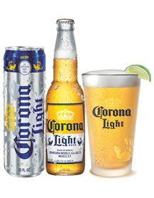

Restaurant Sempiterno
Cervezas
STELLA ARTOIS
Stella que en latín quiere decir estrella. Esta cerveza se convirtió en una de las más emblemáticas del mundo.
Cerveza rubia con espuma muy blanca y sabor amargo.
CERVEZA MODELO ESPECIAL
Cerveza tipo Pilsner. Es la primera marca elaborada y producida por Grupo Modelo en 1925. Calidad, tradición y sabor.
CORONA
Tiene un color inconfundible, un sabor incomparable, en definitiva no tiene igual. Se ha constituido como la cerveza más vendida en México y a su vez, es la primera cerveza de importación.
CORONA LIGHT
Es una cerveza ligera, desconecta del estrés cotidiano y da una sensación sin remordimientos ni pesadez.

VICTORIA
La marca con mayor tradición de Grupo Modelo.
Es una cerveza tipo Viena cuya antigüedad y tradición están ligadas a la historia de México.
CERVEZA NEGRA MODELO
Mejor conocida como la crema de la cerveza. Ofrece un sabor equilibrado, un aroma a malta oscura, caramelo y lúpulo. Hoy ocupa el primer lugar en ventas de cerveza oscura en México.
Specialità della Casa. Prohibida su venta a menores de edad. EVITA EL EXCESO.